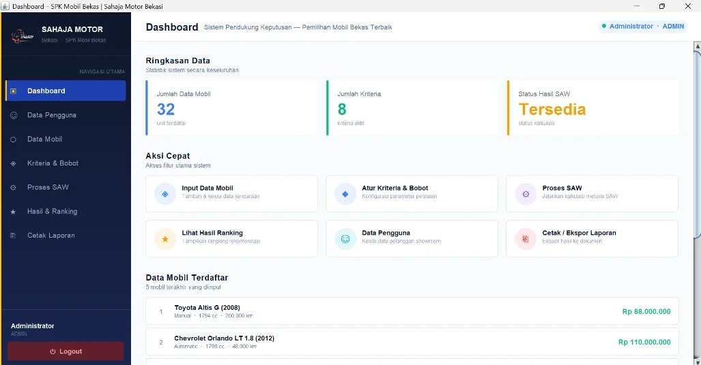
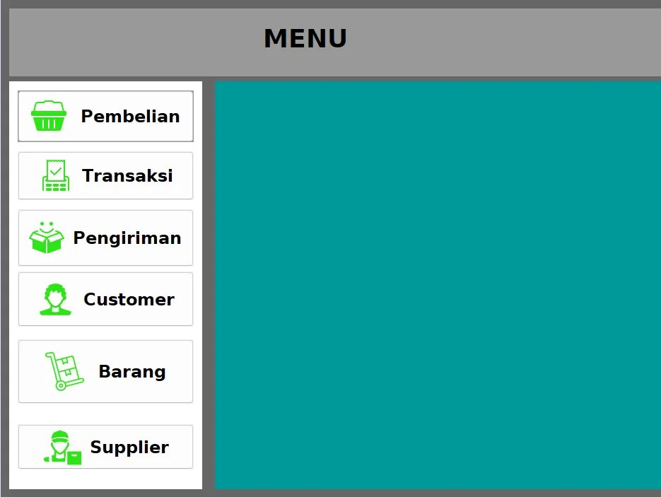

Halo, saya Rizki Ashar Siregar
Tentang saya
Saya mahasiswa Teknik Informatika yang tertarik mengembangkan solusi digital untuk kebutuhan nyata. Saya berpengalaman membuat aplikasi desktop berbasis Java menggunakan NetBeans dan sistem pendukung keputusan dengan metode SAW. Saya juga memiliki dasar pemrograman web, basis data, dan jaringan, serta terbiasa bekerja teliti sesuai prosedur operasional standar.
Pendidikan
Project

17 gambarAplikasi Pemilihan Mobil Bekas
Java (NetBeans), MySQL
Aplikasi rekomendasi mobil bekas untuk Showroom Sahaja Motor Bekasi dengan metode Simple Additive Weighting (SAW). Konsumen memilih mobil berdasarkan kriteria harga, tahun, kondisi, dan lainnya, sehingga pemesanan lebih cepat tanpa memilih secara manual.
Lihat detail project →
13 gambarAplikasi Penjualan Merchandise
Java (NetBeans), MySQL
Aplikasi desktop untuk PT B-Jes Entertainment yang mengelola data barang, customer, dan supplier, transaksi pembelian dan penjualan, pengiriman, serta laporan, dengan stok yang diperbarui otomatis.
Lihat detail project →Pengalaman kerja
Feb 2021 - Apr 2021
Admin (Praktik Kerja Lapangan)
PT Shabila Travel Bekasi
- Memeriksa isi dan kemasan paket sesuai SOP sebelum pengiriman untuk meminimalkan kesalahan dan kerusakan barang.
- Membuat dan mencetak bukti pengiriman berdasarkan data yang diverifikasi langsung dengan pengirim.
- Mengelola pencatatan barang masuk dan keluar antar cabang.
Kemampuan
Pemrograman
Basis data
Jaringan
Tools
Soft skill
Mari bekerja sama
Saya sedang mencari peluang kerja. Kirim pesan dan saya akan membalas secepatnya.